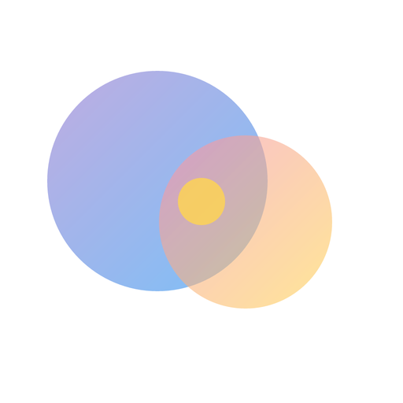
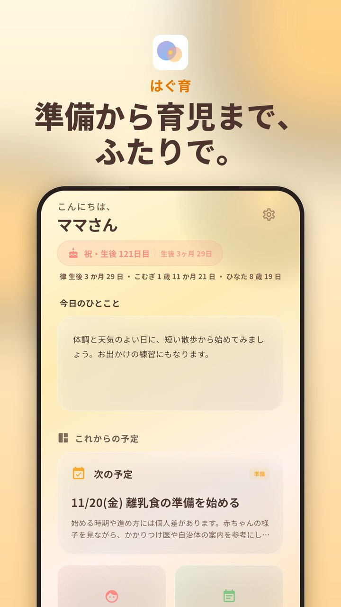
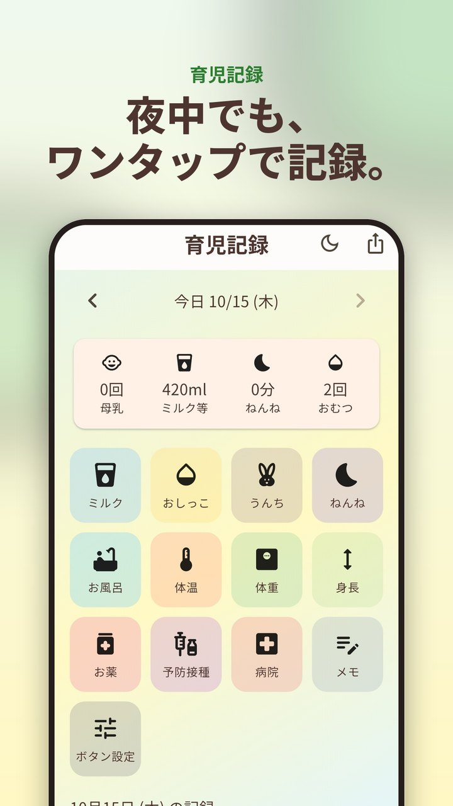
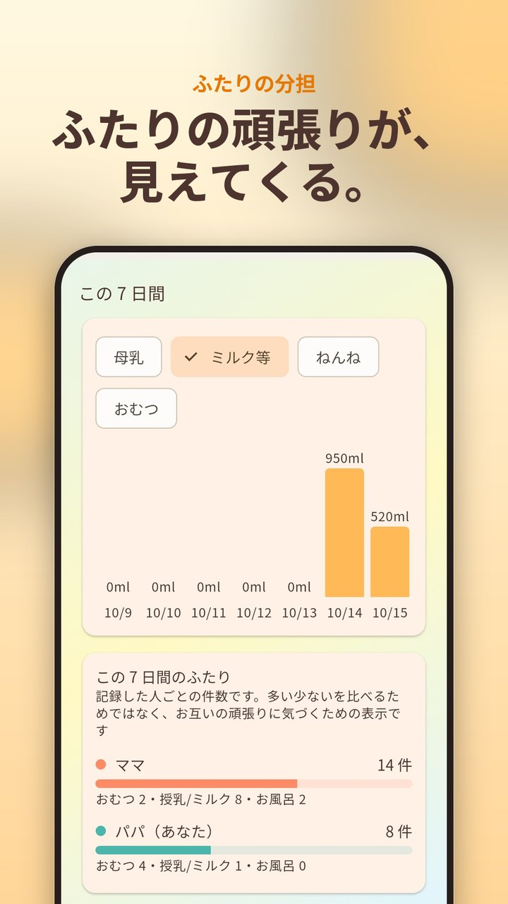
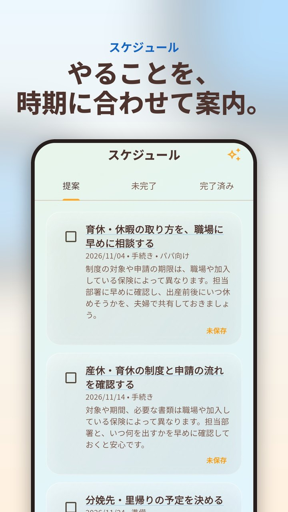
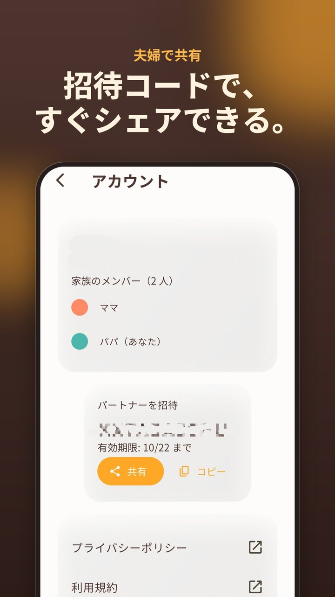
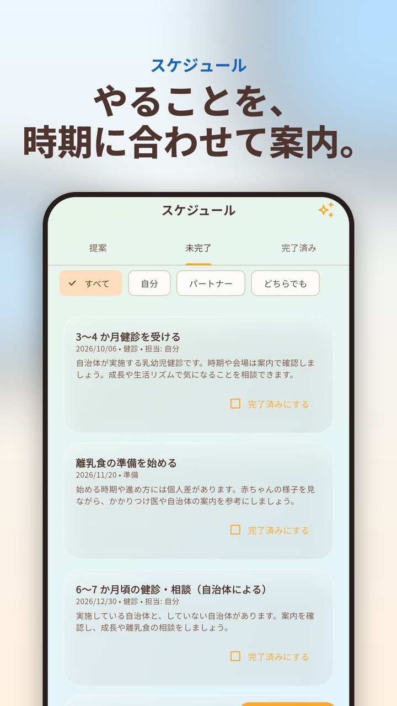
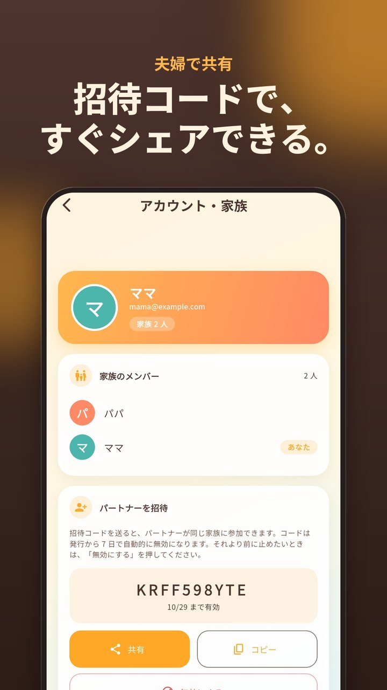
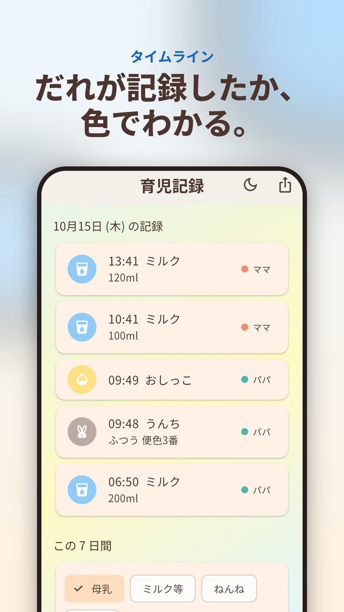

パパとママがいっしょに使う、出産準備から育児までのサポートアプリ
出産準備から産後の記録まで、夫婦ふたりで 1 つのアプリで続けられることを目指しています。
Features
授乳・ごはん・のみもの・睡眠・おしっこ・うんち・お風呂・体温・体重・身長・お薬・予防接種・病院・メモをワンタップで記録。ねんねは 1 回タップで開始、もう 1 回で終了。うんちは便色カードの番号（1〜7）を色のボタンで選べます。ミルクなどの量は、スクロールするホイール（0〜500ml、10ml 刻み）で選べ、よく使う量は自分でワンタップボタンにして追加・削除できます。タイムラインには「2時間5分前」のように、記録からの経過時間も表示されます。
育児記録を月のカレンダーで見られます。1 日ごとの授乳量・おむつの回数と、月の合計・平均が分かります。「初めての寝返り」などの「できたこと」を記録しておくと、「あの日から何日」を時系列で振り返れます。
使わないボタンは隠せて、並べ替えや、自分たちのボタン（カスタム）も作れます。最初に開く画面や、フッター（下部）に出す機能（最大 3 つ）も選べます。夜中でも片手で押しやすい大きなボタンと、画面を暗くするナイトモード、1 日のまとめと直近 7 日のグラフ、CSV の書き出しに対応。
招待コードでパートナーと家族になれば、記録や ToDo が 2 人の間で共有されます。招待コードは共有ボタンから LINE などで送れます（有効期限 7 日）。どちらが記録したかは色分けで分かります。
お子さんを最大 6 人まで登録でき（呼び名はニックネームでかまいません）、画面上部で切り替えられます。まとめ・グラフ・カレンダー・できたこと・CSV の書き出しは、お子さんごとに分かれます。「全員に同じ記録を追加」で、全員に同時に記録することもできます。
母乳・ミルクを記録するときに、次のリマインドを選べます（30 分〜6 時間後を 15 分刻みで、または「通知しない」）。次のリマインドの時刻は、育児記録の画面に表示されます。通知音は、眠っている赤ちゃんを起こしにくい「やさしいハープ」か、端末の標準の通知音から選べます。通知はこの端末だけに届き、お子さんが複数のときは、お子さんごとに届きます。
95 種類の食材を、時期別（初期・中期・後期・完了期）に一覧できます。カテゴリや「まだ食べていない」で絞り込めて、食べた食材にはチェック（食べた日つき）を付けられます。アレルギーを起こしやすい食材には「アレルギー注意」の表示があります。お子さんごとに切り替えられ、夫婦で共有されます。時期は目安で、個人差があります。
出産予定日や出産日にあわせて、手続き・健診・準備など、やることをご案内。パパ向けの「やること」もホームで紹介します（設定でオフにできます）。期限や担当を決めた ToDo も追加できます。
出産・育児の準備品をチェックリストで管理し、時期に合わせてご案内。名前候補は、よみ・由来・画数と一緒に書き留めて夫婦で見比べられ、避けたい名前のリストも作れます。
Screenshots
← スワイプまたはスクロールで確認できます








Story
個人で開発しています。既存の育児アプリを使う中で、「夫婦での共有が切れて困った」「出産前の準備と、産後の記録が別のアプリだった」と感じたことが、作るきっかけです。
出産準備から産後まで、夫婦ふたりで 1 つのアプリで続けられること。機種変更はログインするだけで、記録は 1 件ずつ別に保存されるので、ふたりが同時に入力してもお互いの記録が上書きされません。広告はバナー 1 つだけにしています。
こんな方に使っていただけたら嬉しいです。
FAQ